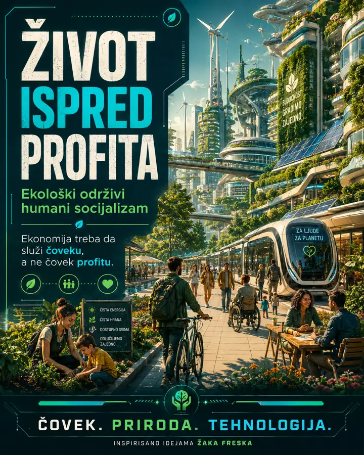
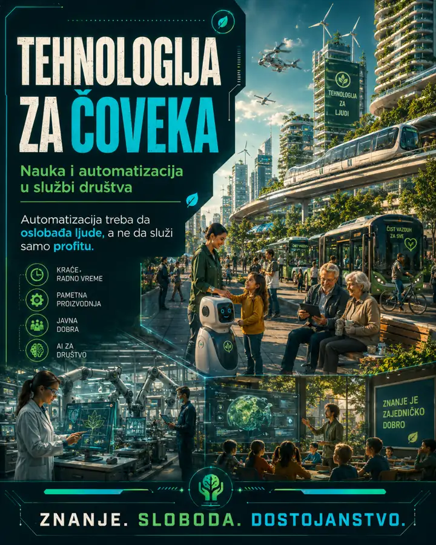
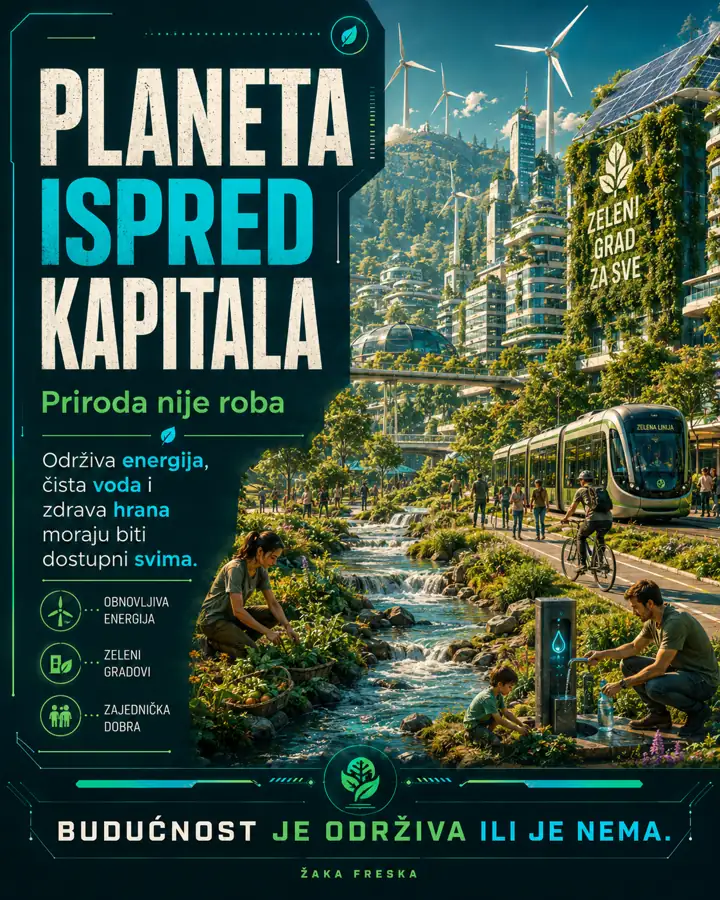
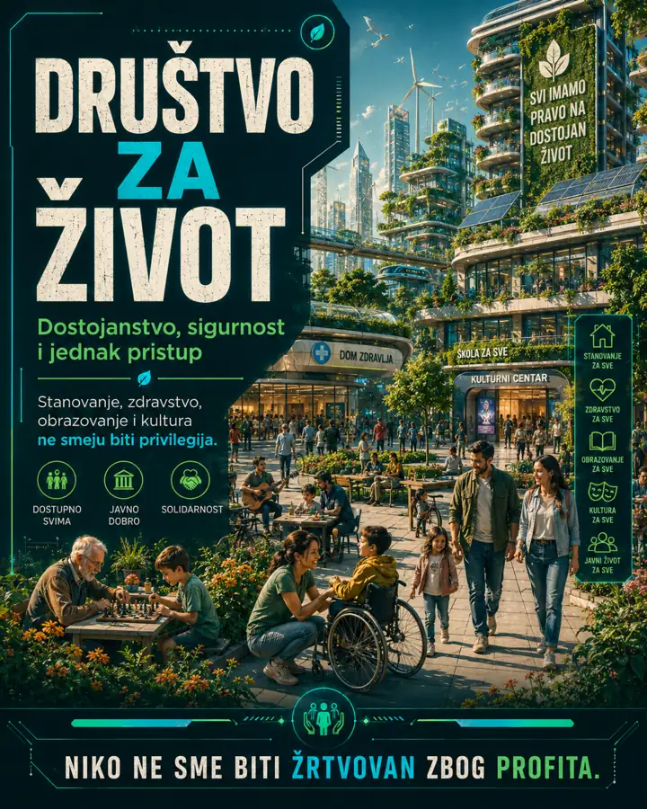

🌍
Planeta ispred kapitalaPlaneta před kapitálemPlanet before capitalPriroda je uslov života, ne obična roba.
Příroda je podmínkou života, ne obyčejné zboží.
Nature is the condition of life, not a simple commodity.
Futuristička vizija društva u kojem znanje, javna dobra, tehnologija i ekologija služe dostojanstvenom životu.
Futuristická vize společnosti, ve které znalosti, veřejné statky, technologie a ekologie slouží důstojnému životu.
A futuristic vision of a society where knowledge, public goods, technology and ecology serve a dignified life.
01
Cilj je društvo koje meri napredak kvalitetom života, obrazovanjem, zdravljem ljudi, očuvanjem prirode i slobodnim vremenom.
Cílem je společnost, která měří pokrok kvalitou života, vzděláním, zdravím lidí, ochranou přírody a volným časem.
The goal is a society that measures progress through quality of life, education, human health, care for nature and free time.
Priroda je uslov života, ne obična roba.
Příroda je podmínkou života, ne obyčejné zboží.
Nature is the condition of life, not a simple commodity.
Tehnološki napredak treba da oslobađa vreme i smanjuje težak rad.
Technologický pokrok má osvobozovat čas a omezovat těžkou práci.
Technological progress should free time and reduce hard labor.
Obrazovanje, zdravlje, dom i energija moraju biti osnova dostojanstva.
Vzdělání, zdraví, domov a energie musí být základem důstojnosti.
Education, health, home and energy must be foundations of dignity.




Preuzmi pamflet na srpskom jeziku.
Brožury jsou dostupné na srbské a anglické verzi stránky.
Download the brochure in English.
Srpski PDFEnglish PDFSajt je inspirisan idejama Žaka Freska i konceptom ekonomije zasnovane na resursima.
Web je inspirován myšlenkami Jacqua Fresca a konceptem ekonomiky založené na zdrojích.
This site is inspired by Jacque Fresco and the concept of a resource-based economy.
www.thevenusproject.com